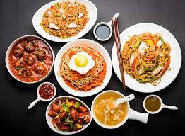
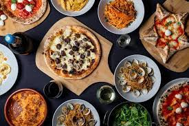

Indian Cuisine

Indian cuisine consists of a variety of regional and traditional cuisines native to the Indian subcontinent. Given the diversity in soil, climate, culture, ethnic groups, and occupations, these cuisines vary substantially and use locally available spices, herbs, vegetables, and fruits. Indian food is also heavily influenced by religion, in particular Hinduism, cultural choices and traditions.[1] Centuries of Islamic rule, particularly by the Mughals, also introduced dishes like samosa and pilaf.[2] Historical events such as invasions, trade relations, and colonialism have played a role in introducing certain foods to this country. The Columbian discovery of the New World brought a number of new vegetables and fruit to India. A number of these such as potatoes, tomatoes, chillies, peanuts, and guava have become staples in many regions of India.[3] Indian cuisine has shaped the history of international relations; the spice trade between India and Europe was the primary catalyst for Europe's Age of Discovery.[4] Spices were bought from India and traded around Europe and Asia. Indian cuisine has influenced other cuisines across the world, especially those from Europe (especially Britain), the Middle East, Southern African, East Africa, Southeast Asia, North America, Mauritius, Fiji, Oceania, and the Caribbean.
Chinese Cuisine
Chinese cuisine is an important part of Chinese culture and includes cuisines originating from the diverse regions of China as well as from Overseas Chinese who have settled in other parts of the world. Because of the Chinese diaspora and historical power of the country, Chinese cuisine has influenced many other cuisines in Asia, with modifications made to cater to local palates. Chinese food staples such as rice, soy sauce, noodles, tea, chili oil, and tofu, and utensils such as chopsticks and the wok, can now be found worldwide. The preferences for seasoning and cooking techniques of Chinese provinces depend on differences in historical background and ethnic groups. Geographic features including mountains, rivers, forests, and deserts also have a strong effect on the local available ingredients, considering that the climate of China varies from tropical in the south to subarctic in the northeast. Imperial royal and noble preference also plays a role in the change of Chinese cuisine. Because of imperial expansion and trading, ingredients and cooking techniques from other cultures have been integrated into Chinese cuisines over time. The most praised Four Great Traditions are Chuan, Lu, Yue, and Huaiyang, representing cuisines
Itialian Cuisine
Italian cuisine has developed over the centuries. Although the country known as Italy did not unite until the 19th century, the cuisine can claim traceable roots as far back as the 4th century BC. Food and culture were very important at that time as we can see from the cookbook (Apicius) which dates to the first century BC.[14] Through the centuries, neighbouring regions, conquerors, high-profile chefs, political upheaval, and the discovery of the New World have influenced its development. Italian cuisine started to form after the fall of the Roman Empire when different cities began to separate and form their own traditions. Many different types of bread and pasta were made, and there was a variation in cooking techniques and preparation. The country was then split for a long time and influenced by surrounding countries such as Spain, France and Central Europe. This and the trade or the location on the Silk Road with its routes to Asia influenced the local development of special dishes. Due to the climatic conditions and the different proximity to the sea, different basic foods and spices were available from region to region. Regional cuisine is represented by some of the major cities in Italy. For example, Milan (north of Italy) is known for risottos, Trieste (northeast of Italy) is known for multicultural food, Bologna .